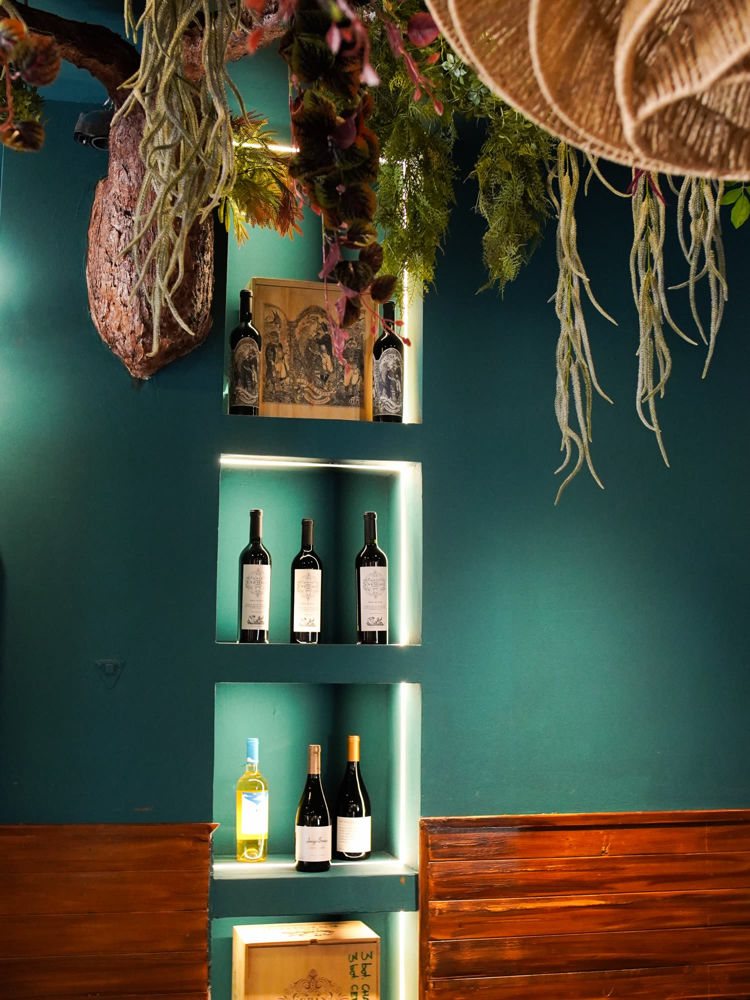
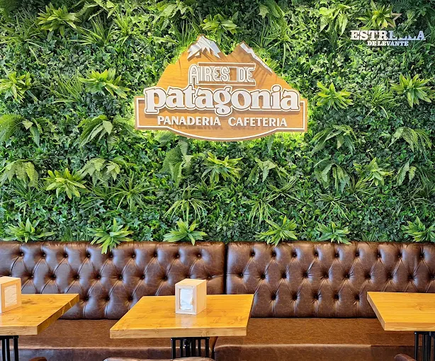
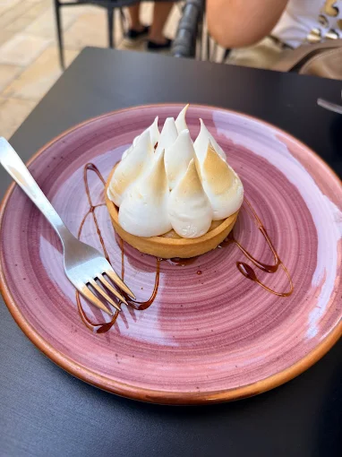
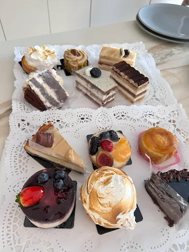
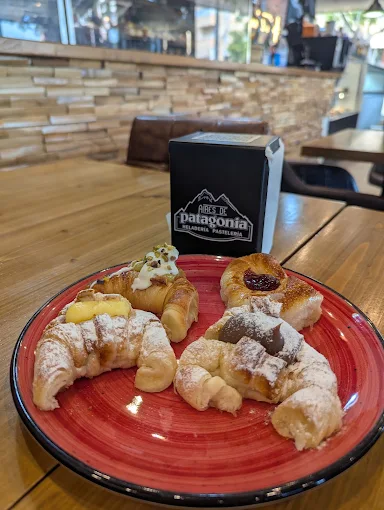
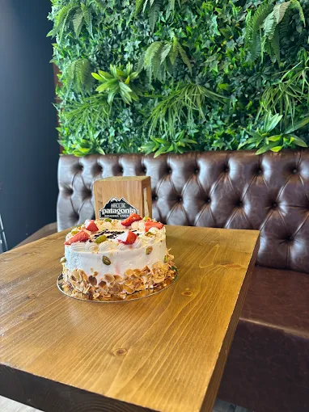

En el obrador
01
La masa
Harina, agua, tiempo. La amasadora trabaja despacio para que el gluten se forme sin forzarlo y la miga salga tierna. De ahí sale todo: el pan, la factura y la miga del sándwich.
Del fin del mundo a la plaza del Abad Penalva
Facturas, alfajores y helado como los de allá. Amasados acá, de madrugada, desde 2022.
Un obrador argentino a once mil kilómetros de casa.
01 — Sobre nosotros

Nos llamamos Aires de Patagonia porque de ahí venimos: del viento, del hielo y de las panaderías donde a las seis de la mañana ya huele a manteca.
Amasamos a diario. La panadería sale del horno por tandas, la pastelería se monta a mano cada mañana y el helado se hace en casa, sin pastas ni atajos. Lo demás lo pone el local: madera, muro verde, helechos colgando del techo y luz cálida para quedarse un rato largo.
Dos casas en Alicante —el centro, frente a la catedral, y San Vicente del Raspeig— con la misma receta, las mismas plantas y la misma manera de recibir: como en casa, aunque casa quede muy lejos.


02 — La carta
Pasá el ratón sobre los platos marcados para verlos.
03 — Cómo trabajamos
Empezamos de madrugada y terminamos cuando el mostrador está lleno. Estos son los tres momentos que se repiten cada día.
Harina, agua, tiempo. La amasadora trabaja despacio para que el gluten se forme sin forzarlo y la miga salga tierna. De ahí sale todo: el pan, la factura y la miga del sándwich.
Capa de masa, capa de manteca, y vuelta a empezar. El hojaldre se estira, se pliega y descansa en frío tantas veces como haga falta. Es la parte lenta, y es la que se nota al morder.
Tapa a tapa. Los alfajores se rellenan y se cierran uno por uno, con la misma cuchara y el mismo pulso de siempre. Lo que se arma por la mañana se vende el mismo día.
Obrador, tandas recién salidas, sabores nuevos de helado y lo que se agota antes del mediodía.
La vitrina






Lo que dicen
0 opiniones en Google y Tripadvisor
★★★★★«Si buscás sentirte un ratito en casa, este lugar es una excelente opción argentina. Sin exagerar, tienen las mejores facturas y bizcochos que podés encontrar; se nota que usan materia prima de primera y que tienen ese “no sé qué” artesanal que marca la diferencia.»
★★★★★«Pastelería de 10. Todo está riquísimo, se nota la calidad y el cariño en cada producto. Además la atención es súper amable. ¡Repetiremos seguro!»
★★★★★«Los mejores helados que he probado nunca. Terraza en pleno centro de Alicante, junto a la catedral. Difícil de superar.»
★★★★★«Luis, el camarero, me ha hecho un café excelente y la atención muy bien de él y de sus compañeros. Gracias.»
★★★★★«Todo es exquisito y el trato es excelente. Lo recomiendo al 100%.»
★★★★★«Pedí unas empanadas y unas medialunas para llevar. Todo fresco y riquísimo, con mucho donde elegir. Sitio muy bien decorado y con buen ambiente.»